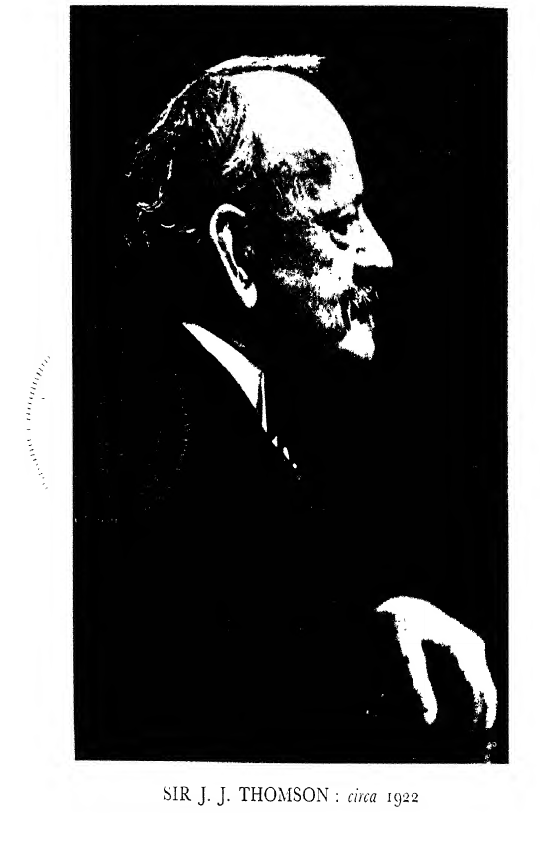

CHAPTER VIII#
War Work: Cambridge during the War#
THE work I did in connection with the war was mainly in association with the Board of Invention and Research (B.I.R.). This Board was instituted in July 1915 when Mr Arthur Balfour was First Lord, for the purpose of giving the Admiralty expert assistance in organising and encouraging scientific effort in connection with the requirements of the Naval Service.
The functions of the Board were:
(a) To concentrate expert scientific enquiry on certain definite problems whose solution is of importance to the Naval Service.
(b) To encourage research in directions in which it is probable that results of value to the Navy may be obtained by organised scientific effort.
(c) To consider schemes of suggestions put forward by inventors and other members of the general public.
There was a Central Committee of which Lord Fisher was President. The other members were Sir George Beilby, Sir Charles Parsons and myself. Vice-Admiral Sir Richard Peirse was appointed Naval Member of this Committee in July 1916. The Board had its offices in a house in Cockspur Street which Lord Fisher characteristically rechristened Victory House.
The Central Committee was the Governing Body, and its approval was required before any proposal could be adopted. It was assisted and advised by a panel of scientific experts. The original panel was Professor H. B. Baker, Sir William Bragg, Professor Carpenter, Sir William Crookes, Mr Duddell, Professor Frankland, Professor Bertram Hopkinson, Sir Oliver Lodge, Sir William Pope, Lord Rutherford (then Sir Ernest Rutherford), and Mr Gerald Stoney. Sir Richard Threlfall was added to the panel at a later date. The first Secretary was Captain Crease, R.N., who was succeeded by Sir Richard Paget.
The most urgent need of the Admiralty at the time the B.I.R. was instituted was some method of detecting submarines, and means were taken at once to start experiments with this subject. The most obvious method of detecting a submarine is by the sound it makes. It had long been known that sound travels well through water, and various methods had been devised for detecting it. Thus, if a tube is closed at one end with a diaphragm and lowered into water through which sounds are passing, the diaphragm will be thrown into vibration and produce in the air in the tube sound waves of the same pitch as those in the water. These can easily be detected by the ear or by a microphone. The problem of detecting a moving submarine by the sound it makes is a most difficult and complicated one. In the first place, the vessel which is hunting the submarine itself produces noises when it is not at rest, by its engines, its motion through the water, and so on. In bad weather these drown all others. Thus a microphone submerged in the water and carried along by a ship will give tongue even when there are no submarines in the neighbourhood. One thing in our favour was the remarkable power the human ear can acquire in picking out a particular kind of sound even when it is mixed up with others very much louder. An example of this is that workmen in an engineering workshop where there is a din that nearly deafens those who are not used to it, can talk to each other without raising their voices. We found that observers after long practice acquired the power of picking out the sound of a submarine even when mixed up with other sounds, and that better results were obtained by careful and prolonged training of the observers than by increasing the sensitiveness of the instruments. The sound given out by a submarine is not a pure note, but a noise made up of a great number of notes of different pitches. In such a case as this resonance does not help much, and since the character of the note depends upon the proportions between the intensities of the different notes, any resonance effect will destroy the quality of the noise of the submarine and make it more difficult to detect. It would be much easier than it is to detect a submarine, if it were a musical instrument and gave out a definite note.
Even if we can identify a noise as due to a submarine we require, if we are to catch it, to know the direction from which it comes. The velocity of sound through water is about 4.3 times that through air. This will be the proportion between the wave-length in water and air respectively. An opaque object placed in the way of a wave will not cast a definite shadow unless the diameter of the object is many times the wave-length. Thus if we determine the direction of the sound in water by placing an object in its way and finding where the shadow is, we have to use much larger objects than would be necessary in air.
Submarine Detection#
The B.I.R. began their attack on the detection of submarines by obtaining from Sir Ernest Rutherford a report on the various methods which had been employed, or suggested, for detecting sounds in water. He reported that the microphone method was by far the most promising. The Board determined to make arrangements on a substantial scale to develop this method, especially on the side of increasing its power of fixing the direction from which the sounds came. They were fortunate in being able to secure the services of Professor, now Sir William Bragg, as the director of this research. It was arranged with the Admiralty that the research should be made at the Naval Experimental Station at Hawkcraig, where Captain Bryan had been making experiments for the Admiralty on sound detection since June 1915. Huts to serve as laboratories were erected by the B.I.R. for Bragg’s work, and it paid the salaries of two trained physicists to assist him in his experiments; a new workshop and a skilled workman were also provided. The plan was that Captain Bryan should continue his work under the direction and at the expense of the Admiralty, while Professor Bragg’s work would be under the control and at the expense of the B.I.R. It was intended that these two branches should co-operate and inform each other of the progress they had made. Professor Bragg took charge in May 1916 and made good progress in the development of detectors. Great difficulties were, however, found in getting opportunities for testing these at sea. The Submarine Committee of the B.I.R., after a visit to Hawkcraig in September 1916, reported that conditions were unsatisfactory. One cause of this was that the Navy was then divided into two parties, Fisherites and Anti-Fisherites, and that every scheme associated in any way with Lord Fisher was regarded by the latter party with grave suspicion and dislike. There was so much prejudice of this kind that I believe B.I.R. was said by the Anti-Fisher party to stand for Board of Intrigue and Revenge. Towards the end of 1916 it was decided to transfer the work of the B.I.R. on submarines from Hawkcraig to Harwich, and a laboratory was built at Parkeston Quay. This change improved matters, but it had involved a loss of several months just at the time when a detector had been devised which, as far as could be tested by experiments on a small scale, promised to be of service in detecting submarines. It was essential that it should be tested by fitting the apparatus to some vessels in the Fleet and seeing how it behaved under service conditions. It was only to be expected that under these conditions defects would be detected which would require further experiments at the Experimental Station to overcome. If it had not been for the delays just mentioned, efficient submarine detectors would have been available months earlier than they were and much loss of life prevented.
It would be much easier to detect submarines if the sound they produce had a definite pitch, for then we could, as in the detection of “wireless” waves, make use of the principle of resonance. Practically, we could make them produce such a note at our will if we directed water waves of a definite pitch on to them and listened to the echo. These waves would have to travel from the ship on the look-out for submarines and back again, and unless some contrivance equivalent to that used for searchlights were adopted, the spreading out of the waves would reduce their intensity so much that it would in practice be impossible to detect the echo except at very short distances. Fortunately we can produce the “searchlight” effect much more easily with short waves than with long ones. If, for example, a flat square plate immersed in water is made to vibrate at right angles to its flat surface so quickly that the wave-length of the waves it produces in the water is small compared with the length of a side of the square, the waves will be concentrated along the direction at right angles to the square. The angle of the cone in which they are confined will be proportional to the ratio of wave-length to the side of the square, so that the smaller the wave-length the greater the concentration. Professor Langevin, whom I am proud to be able to say is an old pupil of mine, discovered, when working in France at the detection of submarines, a method by which oscillations could be produced in plates of quartz, so rapid that their wave-lengths were small compared with the size of the plate, and which allowed a great amount of energy to be put into the vibrations, so that the sound they produced was very intense. This method depends on a recondite property of quartz, which had been discovered years before by an investigation made solely with the object of increasing our knowledge of physics without any thought of practical application. There were many other instances in the war of the practical applications of physical phenomena known previously only to students of the higher parts of physics. Indeed we should expect that any part of our knowledge of the properties of matter or of the laws of physics might receive a practical application. One very important American company, noted for its successful applications of physics to practical purposes, is said to instruct the staff of its research department not to trouble about industrial applications, but just discover something and leave it to the staff of another department to find out how to make it pay, and they generally do.
Besides devising physical apparatus to detect submarines some experiments were made on more unconventional lines. It was suggested to B.I.R. that if sea lions were able to hear sounds made under water they might be used to detect submarines, and thus these might be hunted down by a pack of submarine hounds. Some performing sea lions were hired and experiments were made with them, at first in swimming-baths, afterwards in Bala Lake in North Wales, and finally in the Solent. The method used was to make a sound under water with a “buzzer”, or by hitting a metal plate with a hammer, and to place food at the source of the sound. Thus by following up the sound the animal would always find food, and it was hoped would get to look on it as the call of a dinner-bell. The sea lions were found to hear quite well under water and were able to detect the sound at as great a distance as the detecting instrument we were using at the time. After a short training they learned to associate sound with food and would swim up to its source. In Bala Lake, where the most successful experiments were made, they would sometimes come to the food from three miles away. They were, however, very temperamental; sometimes they would only come from a fraction of this distance. On hot days they were decidedly less efficient than on cold; their speed too was slower than might have been expected. They took at least forty minutes to travel three miles, so that any but a very slowly moving submarine would get away from them. If the porpoises which often circle round Atlantic liners come to the ship through hearing the noise it makes, and associating it with food thrown out from the vessel, they would make much better detectors than sea lions since their speed is so much greater. In the Solent the sea lions were a failure: there were generally several ships about, and they kept turning aside to go to the one making the greatest noise at the place where they happened to be swimming. Another suggestion which proved worthless was to put food on buoys shaped like the periscope of a submarine, in the hope that, if a periscope did appear above the surface of the water, flocks of gulls would fly to it in the hope of getting food.
The B.I.R. and the similar institutions in France and America kept in touch with each other by liaison officers: at one time the French one in England was the Duc de Broglie, a very eminent French physicist, and the American officer was my old pupil the late Professor Bumstead, then Professor of Physics in Yale University, while Sir Ernest Rutherford, Sir Richard Paget and Captain Bridge visited America and France for the same purpose.
Besides the Committee on Submarines there were Committees on Aeronautics, Naval Construction, Marine Engineering, Internal Combustion Engines, Oil Fuel, Anti-aircraft, Noxious Gases and Ordnance and Ammunition.
Part of the work of the B.I.R. was the examination of the suggestions and schemes sent in by inventors, and the general public, for dealing with problems connected with the war. These were so numerous that they required a large staff of clerks and a number of experts from the Patent Office to cope with them. In the first six months after the formation of the B.I.R. we had over five thousand inventions sent in, and the number increased rapidly as the war went on. I should think before it ended the number had increased to well over 100,000; of these not more than thirty proved to be of any value. Though very little that was important for the prosecution of the war came out of this cloud of inventions, its political effect was very considerable. Every invention sent in was examined by experts: no one could say that he had sent in an important invention of which no notice was taken. If there had not been the B.I.R., many would have written to the newspapers, and created an impression that the Government were too casual about the war. Each air raid in London was followed by a crop of hundreds of suggestions for capturing the bombarding Zeppelins. Some of these were very naive. One was to have large balloons moored over London each carrying thick ropes heavily smeared with bird lime and flying at a great height. The idea was that the bombers, when they passed over London, would strike against a rope, stick to it and be captured. Another proposal for ending the war was more elaborate. It was to collect a flock of cormorants, feed them on white food, and peg this in horizontal and vertical lines against the walls of the room in which they were kept. This would give the walls the appearance of brick-work, the food representing the mortar. When they had had sufficient training, they were to be liberated as near as possible to Krupp’s works at Essen. The cormorants, when they saw the chimneys, would think the mortar was food, peck it away, the chimneys would fall down, and the Germans, not being able to receive arms and munitions from Krupp’s, would surrender.
Proposals like these gave no trouble: they were a comic relief in a very serious and harassing drama. There were, however, others equally ridiculous which gave a great deal of trouble. For example, we received an application from an inventor saying that he had devised a method of preventing aeroplanes passing over our lines: for this he asked £7,000,000. He would not say what the nature of the invention was, but said he would do so after we had given an undertaking that we would construct a piece of apparatus after his plans and, if it did what he claimed, give him the £7,000,000. If we had accepted this offer, it would have obliged us to take skilled mechanics, which were very difficult to get, from important work, and go to the expense of constructing a thing which it was highly improbable would be of any use: we therefore turned it down. Then paragraphs began to appear in the newspapers saying that we had rejected a scheme which might end the war, even though the inventor had agreed to let the payment depend on the scheme being successful. This was followed by questions in the House of Commons, and then by “leaders” in influential newspapers, and a very pretty agitation was worked up. So much so that we received a request which could not be refused, that we should reconsider the question. We therefore decided to have an interview with the inventor. He asked if he might bring his advisers with him: to this we consented. Lord Fisher was not able to be present and asked me to receive the deputation. This proved to be a large one. There was the inventor himself, a mechanic, who I think honestly believed in his invention. He brought with him his financial adviser, a solicitor, an auctioneer-I suppose because he expected an auctioneer to be a voluble speaker-and some other oddments whose vocations I do not remember. I told them that it had been decided to reopen the question, but they must understand that we should not think of taking any steps about it unless we had some information with regard to its nature. If the inventor thought the B.I.R. was too large a body to entrust with the secret, then we must try to find someone acceptable to both parties whose verdict we would accept. Then began a very amusing scene. The inventor was full of eagerness to talk about his scheme, while his financial adviser was continually stopping him, saying he must not give away the secret. I asked if the invention would work however high the aeroplanes might fly. He said it did not matter how high they went provided they did not go so high that gravity ceased to act. This was not very hopeful; and so it went on; if I asked a question as to whether it would act under certain conditions, the inventor always started off by saying it would, and was stopped by his financial adviser or the solicitor. The other members of the deputation said little or nothing. In the end we agreed to try to find an acceptable umpire. This took some weeks, but finally one was found. This was the invention: to surround our lines by a ring of iron poles, each a quarter of a mile high and separated from each other by the same distance: the poles were vertical and each pole was provided with an engine to make it turn about its axis. Fastened to the top of each pole was a steel chain one eighth of a mile long, and at the free end of the chain there was a bag containing a large quantity of dynamite. When the poles were set spinning by the motors the chains would fly out and become nearly horizontal, so that the troops would be protected by a belt of dynamite. This preposterous scheme had been supported by many influential and honourable men, who however knew nothing technically about the nature of the invention which they thought ought to be investigated. The agitation had attracted a good deal of attention and had been an excellent advertisement for the scheme, and if it had been announced that the Government were considering it, it would probably have been possible to get a considerable response to an issue of bonds which were to be repaid at a high premium out of the £7,000,000 which the Government would pay for the invention.
Another proposal which got considerable support from some influential people came from an inventor who claimed to have produced gold from quicksilver. It is true that quicksilver in a vessel containing gas at a low pressure sometimes gets coated over with a yellow film of some compound of quicksilver when a current of electricity passes through the gas. To some people everything that glitters is gold, and the inventor, who had observed this, thought he was making gold out of quicksilver. This had been brought to the notice of the Government and again an agitation began, urging them to do something. Mr Arthur Balfour came to me and asked me to go into the matter, as questions were sure to be asked in the House, and the Government would be in a stronger position to answer them if they could say that they had already taken steps to have the discovery investigated. Accordingly I suggested several experiments, and said if these were made in my presence I would be prepared to express a definite opinion on the discovery. These, however, were never made, for it was discovered that attempts were being made to induce people to take shares in a syndicate to exploit the discovery by saying that the King was taking a keen interest in it, while as a matter of fact His Majesty had never even heard of it. The Government thought that this would be quite a sufficient answer to any question that might be raised in the House.
Lord Fisher#
Owing to my connection with the B.I.R., I saw a good deal of Lord Fisher between 1915 and 1918. I never came across anyone with such pronounced personality, nor with such extraordinary driving power. His method was that of the mailed fist rather than the gloved hand, and in carrying out his schemes he made many enemies and hurt many people’s feelings. When different schemes came before him he spent very little time in determining which should be chosen, and in his choice he seemed to be guided by instinct rather than by reason. When he had made his choice, his whole energies were thrown into carrying it into effect. This was a great contrast to the practice I had been accustomed to in University matters. In these, much time and energy is spent in discussing what scheme should be adopted, so much so that one is apt to be tired of the scheme before it is started, and to be languid in carrying it out. There can be no question which is the better method in war-time. Lord Fisher had foresight and imagination as well as energy. He could see the potentiality of inventions which in their early stages had been nothing but failures. He envisaged what service they might render if the purely mechanical difficulties were overcome, as there was a good chance they might be by skill and perseverance, and he did all in his power to expedite this process. Thus, in spite of great difficulties he had been trying type after type of submarines, and it was, I believe, due to him that we had, at the beginning of the war, submarines in our Fleet. The most dramatic naval event in the war was the destruction of German warships at the battle of the Falkland Islands by the fast cruisers Invincible and Inflexible which he had introduced into the Navy. He was strongly in favour of using oil fuel in our ships, and he often talked of the desirability and possibility of submersible cruisers. Though he did so much to introduce into the Navy every possible mechanical contrivance which could make it more efficient, yet in his view the tactics of this mechanised fleet should be as full of the spirit of adventure as those of the old Navy. He had no use for the motto “Safety First”: the “Nelson touch” was what he always longed for.
I remember very vividly the morning after the battle of Jutland; when I got to the office he was pacing up and down the room more dejected than any man I have ever seen. He kept saying time after time, “They’ve failed me, they’ve failed me! I have spent thirty years of my life in preparing for this day and they’ve failed me, they’ve failed me!” This was the only time I ever knew him to be doubtful about the issue of the war. He used to say: “The Government, the Army and the Navy may make as many mistakes as they please, but we are bound to come out top in the end because we are one of the lost tribes.” He had an excellent knowledge of the text of the Bible; he used to say that the two things he enjoyed most were listening to sermons and dancing. In the middle of the war, when things were going badly, Mr Winston Churchill spoke in the House of Commons in favour of bringing him back to the Navy, a very notable thing to do, as Fisher’s retirement from the Navy was due to differences between his views and those of Mr Churchill with regard to naval policy. The next morning as soon as I got to the office he began, “Have you seen what Winston said about me last night?” I said I had, and was much surprised. “Surprised!” he said, “I should think you were. There’s never been anything like it since Herod made friends with Pontius Pilate.”
Even trivial things he did in the grand manner. The notes he wrote to me from the office were on large-quarto paper put without folding into envelopes of the same size. They consisted of perhaps half a dozen lines, and often ended, “Yours till Hell freezes, Fisher”. He wrote, at the time I was working with him, his reminiscences, and asked me to read the first draft. It was the most indiscreet and outspoken document I ever read. I hastened to return it as quickly as possible, for if by any accident it had come into possession of anyone connected with the Press the fat would have been in the fire with a vengeance. Some of his reminiscences were published afterwards in The Times, but these must have been rewritten or very severely edited, for they were “but as water unto wine” compared with the draft I saw. I may say that the account he gave of his reasons for leaving the Admiralty was practically the same as that also published later in The Times by Mr Churchill, the other party concerned in the affair. He told me also of an incident which had occurred when he was made First Sea Lord. He said Mr Asquith, when making up his Cabinet, sent for him and said, “Sir John, your name has been mentioned to me for the Admiralty and nothing personally would give me greater pleasure, but I am in this difficulty: I am hoping to get Mr McKenna as my Chancellor of the Exchequer, and I am told that you and he are not on speaking terms”. I said, “Mr Asquith, I don’t know why anyone should have told you that; it is quite untrue. I never refuse to be on speaking terms with anybody; you lose so many opportunities of saying disagreeable things.” I had occasionally to go with Lord Fisher to the Treasury to apply to the Chancellor for financial assistance for the B.I.R., and the relations between them were most cordial, nay, even jovial.
Lord Fisher had had some training in science, for when a young man he had been an instructor in the Navy and given lectures on elementary physics: he told me that he always tried to make them as lively and amusing as possible. If his lectures were like his talk they certainly would be amusing, for he could introduce an unexpected word with great effect: e.g. he had received a great number of orders and decorations from foreign courts when travelling with King Edward. “You should see me”, he said, “when I have got them all on; I look like a blooming Christmas-tree.” Again, I once heard him say, “I cannot understand why X, who is a man of first-rate ability and has done good work, has never received any official recognition: some say it is because he has a wife in every port and never goes to bed sober; but trifles like that won’t explain it”.
He seemed to require much less sleep than most people. A naval officer who had been with him a great deal said that in his prime he never took more than four hours’ sleep, even in his busiest times. I always got on very well with him, and his grandson’s name was entered for admission to Trinity College when he was only two years old.
The experience we had at the B.I.R. showed the danger of leaving the investigation of the applications of science until war breaks out, trusting to being able to improvise some makeshift on the spur of the moment. The transition from the laboratory to the workshop or to the ship is one that in most cases takes a long time and much work and expense. Effects which are of trivial importance in the small-scale experiments in the laboratory, may be vital on the large scale necessary for practical utility. Faraday said of his discovery of the phenomenon of electromagnetic induction that it was a babe, and no one could say what it might do when it grew to manhood; but it took more than thirty years for it to pass from the nursery of the laboratory to the rough-and-tumble of the workshop. Again, electric waves produced in one room of a laboratory could be detected in another ten years before they could be detected at what now seems the insignificant distance of a mile. For this reason the B.I.R. got the Government to establish a laboratory for research on problems which, like that of the detection of submarines, might be of service to the Navy. The laboratory is at Teddington, near the National Physical Laboratory. The first director was Mr, now Sir, F. E. Smith, who was succeeded by C. S. Wright, an Antarctic explorer, who is an old pupil of mine.
A conspicuous example was Richard Threlfall, later Sir Richard Threlfall. He had given up his Professorship at Sydney some time before, and had become a member of the firm, Albright & Wilson of Oldbury, near Birmingham, the largest manufacturers of phosphorus in the country, and probably knew more than anyone else in England about phosphorus. He applied this knowledge with great success to war purposes and, through him, phosphorus played a considerable part in the war. It was used for making smoke screens behind which a vessel could hide from an enemy ship. His phosphorus bombs, too, proved very useful. He was also the first to suggest the use of helium in place of hydrogen for airships. Helium is not inflammable and does not explode, and so is a complete safeguard against fire. An airship requires, however, a very large quantity of helium, and at that time there were no appreciable supplies in our Empire. He brought this matter before the B.I.R. and at his instigation we got J. C. McLennan, Professor of Physics at the University of Toronto, an old pupil of mine, to analyse the gases which gush out from the ground in some parts of Canada where there are oil wells, and which are used to light some towns, e.g. Medicine Hat. Similar gas streams in Texas had been found to be rich in helium. McLennan threw himself into this work with characteristic energy, and examined a large number of the wells in Ontario, Alberta and British Columbia. The best results were given by a well in the Bow River district in Ontario, where there was about 3 parts of helium in 1000 parts of the gas coming out of the earth. This, though much smaller than that for the Texas wells, is much larger than any known in other parts of our Empire.
Threlfall was a chemist and engineer as well as a physicist, so that his services were in continual request for reports on projects submitted to the B.I.R., and there were few meetings of the B.I.R. when we had not something from him before us. Sir George Beilby and Sir Charles Parsons were, like Threlfall, responsible for large concerns and, like him, spared a great deal of time for war work. After the war and quite independently, indeed for some time unaware that the other was doing it, both Parsons and Threlfall made experiments on an engineering scale to see if they could make diamonds from carbon. The great French chemist, Moissan, thought he had done this. He had obtained small particles which, though they did not look like diamonds, did not behave like pieces of graphite, the other form of carbon. The experiments went on for about two years and were very costly. Threlfall, after he had made up his mind what he had got by his method, happened to meet Parsons and said, “Parsons, I don’t mind telling you that my diamonds are graphite”. “So are mine”, said Parsons. I believe the general opinion is that Moissan’s must have been so too.
Education#
In addition to my work at the B.I.R. I was, for the greater part of the war, Chairman of a Government Committee to report on the position of natural science in the educational system of Great Britain. This was very interesting though it involved attendance at a great many meetings. We examined a large number of witnesses and produced a report which was signed by all the members of the Committee. In the report it stated “that it could now be claimed that some science is taught in all schools and a great deal in a great many. This is a great advance and has practically all been made in the last fifty years. It cannot, however, be said that even now science occupies in our system of education a place commensurate with its influence on human thought and on the progress of civilisation.” We pointed out in our report that the examination for entrance scholarships to our great public schools tends to entice boys to classics whose strength may lie in other subjects. In the examination for these scholarships much greater weight is given to classics than to any other subject, and a boy must have spent most of his time on classics if he is to have a chance for a scholarship. Thus when he goes to school he is much further advanced in classics than in anything else, and naturally takes it as his main subject. That this is the case is proved by the fact that, of the entrance scholarships to Cambridge Colleges gained by boys from seven great public schools which give school entrance scholarships, for one gained for science six were gained for classics. This disproportion is far greater than the average for all schools, showing that it is not due to the scarcity of scientific ability as compared with classical, but is an artificial one due to the system in force at these schools.
Another matter which came before the Committee was the intense specialisation adopted by some schools in the preparation of boys for entrance scholarships given by Cambridge and Oxford Colleges. We were told of cases where such boys spent by far the greater part of their time, for two years before the examination, in doing the mathematical papers which had been set in previous years. I think, however, that this mainly occurs in small schools where it is rare to have a boy of anything like scholarship standard. When there is one, the master not unnaturally wishes to make the most of him, so as to raise the reputation of the school.
Another question the Committee considered was that of the age for leaving school. This was not then, as it is now, complicated by its connection with the relief of unemployment. The evidence which came before us showed that, though an extra year was unpopular with a large number of parents on the ground that they would lose the wages which their boys might have earned if they had left school, it was much more unpopular with the boys themselves, who for the most part wanted to be their “own masters” as soon as possible, and thought it more manly to be an errand-boy than to be at school. There were, however, many boys, and some of them by no means the least intelligent, who were fed-up with school, took no interest in their work, and if they stayed longer at school would be only marking-time until they could get away. Some of these were boys whose minds, like those of very many of their elders, do not exert their full powers until they have some concrete problems to deal with. Then they may show more ability than those who have done better at the bookish subjects and got higher up in the school. I feel convinced that the best subjects for developing a boy’s intelligence are those in which he is interested, and if he cannot find these in his school work, I think it better he should leave school and see whether he cannot find them in business, or in the workshop or the mill. I have seen at the Cavendish Laboratory instances of a great increase in intelligence after leaving school and coming to work as laboratory assistants. I have known cases where a boy, who did not seem very promising when he first came to the Laboratory, at the end of the year showed a decided increase in intelligence. This increase went on until he became a very efficient assistant either for research or for lectures, or a very capable foreman in the workshop. It is remarkable that, though the English are not a specially bookish people, there are many who seem to think that it is only in the study of books that intellect is exerted, in spite of Dr. Johnson’s dictum that in the study of history all the higher qualities of the mind are quiescent. The great German man of science, von Helmholtz, who, beginning as a medical student, was led by his medical studies to study physiology, by his physiology to study physics, by his physics to study mathematics, and rose to be one of the foremost authorities of his time in all these sciences, declared that he had spent more intellectual effort in getting an instrument that was out of order to work properly, than he had in framing the theory which the instrument was being used to test.
Science teaching in schools has had many difficulties to overcome. Laboratories for physics, chemistry or biology are generally expensive, and may put a severe strain on the resources of those schools which are not in receipt of a Government grant. It is not, however, necessary, perhaps not even desirable, that school laboratories should be equipped with very elaborate and expensive instruments. An enthusiastic teacher may get excellent results with simple and even with improvised apparatus, just as great discoveries have been made by physicists working in their own houses. Indeed, simple apparatus is more intelligible to the student than elaborate instruments where the physics of the experiment may be hidden by the complexity of the instrument. It is necessary, however, that the instrument, though simple, should be designed so as to be capable of giving accurate results.
Another, though less important, point is that while the teaching of classics and mathematics has a long experience and tradition behind it, the teaching of science in schools has no such tradition, and its methods have had to be developed. I think too much importance may be attached to the consideration of method. The personality of the teacher is the most important thing; a good teacher will soon find the method which in his hands will give the best results, and will do better with this than with one imposed on him from without.
I was, during the greater part of the war, President of the Royal Society, and for the last eight months of it Master of Trinity College. Though the work of the President of the Royal Society was not quite so arduous as it is in normal times, when he is expected as the representative of British science to attend a large number of public dinners which, especially when he is not living in London, take up a good deal of his time, I had with it, the B.I.R. and the Committee on Education, plenty to do, and spent the greater part of my time in London, generally, however, coming back to Cambridge in the evening, as I found its quiet refreshing after the turmoil of that city. One night, however, after a very long day’s work, I stayed in London at Garland’s Hotel in Suffolk Street. After I had gone to sleep I was awakened by a prodigious noise, which turned out to have been due to a bomb which fell close to the hotel. I soon fell asleep again and slept until breakfast-time. When I came down I found I was the only person who had not spent the night in the basement. The Zeppelin had returned not long after it had dropped the first bomb and dropped several other bombs as it came back, without awakening me.
Cambridge during the War#
With the breaking out of the war in August 1914 there began a period lasting for more than four years when everyone had to give up his usual work and turn to something which might help to enable us to win the war. Those undergraduates who were physically fit joined the Army, taking at first commissions in the Regular Army, and later in Kitchener’s. The older men helped with the work in Government offices, e.g. the Foreign Office and the Admiralty. Some who had an especially intimate knowledge of some foreign language, or were adepts at acrostics or cryptograms, joined the department which was established for decoding the German wireless messages; others went as masters in schools to free a younger man for service in the Army. Some of those who remained in Cambridge undertook to patrol the streets at night to see that all lights were out, as it was thought very important to make it as difficult as possible for the Zeppelins to locate Cambridge. In this they were very successful, as Cambridge was never bombed in the war, though bombs fell within a few miles. It was so dark at night that people who, like myself, are bad at seeing in the dark, when they went out, were continually bumping into people in the streets. So vigilant were these inspectors, and none more so than the late Dr. McTaggart, the distinguished philosopher, that Trinity College had to give up using white linen table-cloths on the dining-tables in Hall, as it was thought that light might be reflected from these through the lantern at the top of the Hall. The oak tables looked so well without cloths that these have not been resumed.
The cloisters of Trinity College very early in the war were used for a hospital for some of those wounded in the earlier battles. They continued in use until the large hospital which was being installed on the King’s and Clare cricket ground was completed. At first, too, some regiments were billeted in one of the courts of the College, but for by far the greater part of the time the College was filled with young men who had already joined the Army, and came to receive an intensive course of instruction, by lectures and by physical training, to qualify them to receive a commission. Some of them had already been at the Front as privates and had shown promise of making efficient officers. They were under the charge of a military staff. Besides their training, the cadets played football and cricket matches, had athletic sports and published an illustrated magazine, The Blunderbuss. This will live in history, as it was in it that Professor Housman, who was in residence, first published his well-known poem beginning:
As I gird on for fighting My sword upon my thigh, I think on old ill fortunes Of better men than I.
The cadets attended church parade in the Chapel on Sunday mornings, and they adopted Bunyan’s hymn-
He who would valiant be ‘Gainst all disaster,
one often sung in our Chapel, as a song to sing when they were on the march. At the end of their course they were entertained in the College Hall at a farewell dinner.
Batches of them came to the Lodge on Sunday mornings after Church parade, and I got an opportunity of talking to them. Some of them were remarkably interesting and intelligent and took a great interest in the buildings and pictures in the College. Some who had been at the Front were miners, and I was surprised to find the affection they had for their mine. They said a mine was such a nice place, so warm and comfortable, and they seemed to dislike the trenches even more than the others.
The stay of the cadets at Trinity gave us many pleasant reminiscences and went off without a hitch. This was due in part to the very friendly relations which existed between the military staff and the Fellows of the College, and in an even greater degree to the tact and diplomacy of the late R. V. Laurence, who took on himself the work of the Junior Bursar, who had gone to the Front. Laurence conducted many difficult negotiations with the War Office with such tact and skill that a solution was reached which was satisfactory to both sides. The loss of Trinity men in the war was grievously large: on the panels in the College Chapel the names of more than 600 Trinity men who fell in the war are inscribed, including three of the younger Fellows of the College. Keith Lucas, F.R.S., killed in an aeroplane accident, was a College Lecturer in natural science, and a man of remarkable ability. He had done important work in physiology; he excelled also in designing instruments for scientific research, and invented an internal combustion engine on a novel principle. C. E. Stuart was a College Lecturer in classics; he was killed at the Front a few weeks after his marriage. Geoffrey Tatham was our Junior Bursar and was much beloved in the College. There is a sundial in the College garden in memory of these three friends. Tatham left a legacy to the College which was used to panel the Combination Room now in use, which was made just after the end of the war by throwing together some rooms which had formerly been a part of the Lodge. It is one of the most frequented rooms in the College: in the daytime it is the place where numberless committees have their meetings, and at night it is where the Fellows take wine after Hall. There is an inscription in the room recording the legacy and there could be no place more fitted to keep his memory green.
In this list there are the names of many younger men who had already distinguished themselves in many walks of life, and done enough to show that much might have been expected from them. They one and all have endowed the College with the precious heritage of being able to count among its members so many who have made the supreme sacrifice for their country. They are benefactors of the College, and it is fitting that the list of our benefactors, which is read every year at our annual Commemoration, should conclude with this reference to them: “Lastly, while we thus enumerate those who have enriched us of their substance, it behoves us also to commemorate those other benefactors, an unnumbered multitude who by achievements in literature, science, philosophy and the arts, or by patient continuance in well-doing have brought honour to the House and good report, and more especially those six hundred fallen in war whose names are written on these walls. For it is meet that we should have these also in remembrance, celebrating them in our praises and having them in honour at such times as these.”
About 16,000 Cambridge men served in the war: of these 2652 were killed, 3460 wounded and 497 reported as missing or prisoners; 12 obtained the Victoria Cross, 899 the D.S.O. and 5036 were mentioned in dispatches.
Things were at the worst in the academical year 1917-18. Only 281 students matriculated; the number of men students had fallen to a fraction of the normal value, and since the greater part of the income of the University comes from fees, the financial position was very serious. The Council of the Senate met throughout the war but dealt, with one exception, only with necessary routine business. It would evidently have been very unfair to bring forward any contentious business, involving as it would voting in the Senate House, when the majority of the younger members were away on military service and unable to register their vote. There was, however, one question on which there might be a difference of opinion which it was necessary to settle before the war ended, and that was for how many terms should the men who had been at the Front be required to reside, after their return to Cambridge, to qualify them for a degree. It was evident that it was only fair that they should not be required to reside as long as those who had not been away on service, and that whether they returned to Cambridge or not would depend on the amount of the reduction. The first proposal made by the Council was severely criticised as not being generous enough, and the Council withdrew this proposal in favour of one which allowed those who had been away on service for four or more terms to count four terms as residence in the University, and that they should be excused from passing the Little-Go.
The German victory at St. Quentin in March 1918 gave little hope of a speedy termination of the war, but “the darkest hour is that before the dawn”, and conditions improved very slowly at first but with ever-increasing rapidity, and the Armistice was signed in November 1918. The Government made liberal grants to help those who had served in the war to come back to the University, and these did so in great numbers. In January 1919, 655 students, and between January and June 1552 students, matriculated. These numbers include 400 naval officers who came to Cambridge to complete their scientific studies, which had been interrupted by the war. There were also with us for the Easter Term about 200 American soldier students. Another instance of the rapidity with which the University filled up was that, in June 1919, 105 students passed Part I of the Mathematical Tripos. The Vice-Chancellor, in his address to the University in October 1920, reported that the University was full to overflowing. In June 1919 the University decided, by 161 votes to 15, that Greek should no longer be compulsory for the Little-Go. This ended a controversy which had been smouldering and occasionally bursting out for more than thirty years.
The war had lasted for more than four years, which is a year longer than an undergraduate’s stay in College, and we were afraid that there might be no one to hand down the traditional conventions, to restart the clubs and other forms of undergraduate activity. This fear, however, proved baseless: though these students had gone through the grim experiences of the war and were older than the pre-war undergraduates, it was surprising to see how like their ways were in most things. They talked very little about the war; they seemed almost to wish to blot it out of their lives, and to have just the same experiences as those who came before them. There was no breach of continuity, in fact hardly a bump in the crossing from war to post-war times. As the boat race takes place in March and no one had returned until the middle of January there was no time to make preparations, but the cricket match with Oxford, which is not played until July, came off.
The cessation of the war relieved us from much anguish and anxiety and raised great hopes: we thought that, as we had weathered the storm, the rest would be comparatively plain sailing to prosperity greater than the nation had ever had before. These hopes have certainly not been fulfilled.
I think, too, there has been a considerable change in the views about war held by not a few of the younger men. In the war there were in the University some conscientious objectors, but not very many; several of these were Quakers, and the greater number objected to war on religious grounds. There were very few whose sincerity could be questioned; indeed it required great moral courage, or exceptional physical cowardice, to face the odium of being a conscientious objector rather than go to the Front. I think in another war the conscientious objector will be a much more serious difficulty than he was in the last: there will be many who would fight to defend their country if it were attacked, but who would not go into another country and attack it. It is, however, difficult in warfare to rely on defence alone for repelling an attack.
Lads’ Club#
My only brother died before the end of the war. He was the most unselfish of men and devoted most of his free time to the Hugh Oldham Lads’ Club in Ancoats, Manchester, of which he was Honorary Secretary for 21 years. This Club is connected with the Manchester Grammar School, and Ancoats was then one of the most slummy districts in Manchester. My brother, who was a bachelor, was engaged all day in business, but used to spend regularly four evenings a week at the Club. He was a great lover of boys and very successful in his dealings with them. His method was very simple; he never gave lectures or made speeches, but just talked with the boys one by one. Above all, the boys always knew where they could find him if they were in any difficulty and wanted his help. Playing-fields near Manchester could not be got except at very considerable expense, and the Club had to be content with derelict pieces of land on which “soccer” could be played after a fashion, though cricket was impossible. In games which did not require playing-fields the Club was very successful. Open championships in long-distance races, both swimming and running, were won by boys who had been at the Club, where their swimming had been done in municipal baths, and their running by racing through the streets of Manchester at night. As these long races require special powers of endurance, this shows that even the slums of a large town may produce boys of as good physique as any in the country. My brother was very fond of chess, and he managed to impart his fondness for it to a good many of his boys at the Club. A great event in the Club life was the annual camp, when the boys camped out for a week in the country or at the seaside. The preparation for the housing, feeding, entertaining and providing for the many contingencies which were likely to arise, for a camp of five or six hundred boys, was a very formidable business; it involved dealing with numberless details and required heavy work lasting over a long time. My brother had as long and as successful experience of this work as anyone, and was often consulted by Boys’ Clubs who proposed starting a camp. He told me what I should not have expected, that the boys enjoyed the camp most when there was a town of considerable size within easy reach; after two or three days in the country they began to miss the bustle and shops and other attractions of the town. If they could go into a town for an hour or two this longing was cured, and they came back eager again for the camp life. He very often had the camp at Prestatyn, a place on the Welsh coast near to Rhyl, a town which acted as a tonic. I heard of another case which also showed this nostalgia for the town in town boys. A man interested in boys’ welfare took two London boys for a trip to the Canadian Rockies. When they first saw the snow mountains he said, “Did you ever see anything like this before? Isn’t it magnificent?” One boy said, “It may be all very well for them as likes it, but give me London on a Saturday night”.
My brother’s health broke down in 1914 and he had to give up his work at the Club. He came to live at Cambridge and spent much time in writing letters to boys at the Front who had been at the Club. He also came across some Cambridge boys he was able to befriend. He died on July 11, 1917.
Lord Rayleigh#
I lost during the war an old friend, Sir W. D. Niven, F.R.S., who had been very kind and helpful to me ever since I was a freshman at Trinity.
Lord Rayleigh, the Chancellor of the University, died at his home, Terling Place, Essex, on June 30, 1919. He had not been in good health for above a year, but was well enough to deliver his Presidential Address to the Psychical Society, of which he was President and had been a member for 22 years, in April 1919. The funeral was at Terling and the University sent a deputation headed by the Vice-Chancellor.
Lord Rayleigh had been elected Chancellor in succession to the Duke of Devonshire in 1908. He had some hesitation about standing because, with one exception (the Marquis of Camden), there had been no Chancellor for over two hundred years who had not been a Duke at least. Curiously enough Mr Arthur Balfour, who succeeded him, felt scruples about allowing his name to be put before the University for the Chancellorship because no commoner had ever held that office. Lord Rayleigh was elected Chancellor without opposition. The installation was on June 17; he came up to Cambridge on the 16th and opened in the afternoon a new wing of the Cavendish whose erection was made possible by the donation of £2000 which he had made to the University when he received the Nobel Prize. For five years he had come to the Laboratory almost daily in term time, but he had never before come to it in a scarlet gown with two esquire bedells before him, carrying their long silver maces, head downwards. These maces, though they bow their heads before the Chancellor, disdain to do so before a mere Vice-Chancellor, and are then carried with their heads uppermost.
After the installation on the 17th, the new Chancellor conferred honorary degrees on a number of distinguished people. It is the custom for the Chancellor himself to nominate the recipients of the degrees given at his installation. Mr Asquith, the Duke of Northumberland, the Earl of Halsbury, Admiral Sir John Fisher, Sir H. von Herkomer, the Hon. C. A. Parsons, Sir G. O. Trevelyan, Bart., Sir James Ramsay, Bart., Sir W. Crookes, Mr Rudyard Kipling, Mr Alfred Marshall, Professor G. D. Liveing were the recipients of degrees. At the luncheon after the conferring of degrees, Sir Andrew Noble announced that some of Lord Rayleigh’s friends, not resident in Cambridge, wished to express the gratification of the scientific world at his election by offering to the University a sum sufficient to provide an annual prize to bear his name. The Rayleigh Prize for mathematics was founded with this donation and is awarded at the same time, and by the same Electors, as the Smith’s Prizes. Sir H. von Herkomer, to express his appreciation of the degree he had received, presented to the University a portrait by himself of Lord Rayleigh in his Chancellor’s robes, which is now in the Fitzwilliam Museum.
Lord Rayleigh told me that the one thing he regretted about his election was that the presence of the Chancellor in Cambridge interfered so much with the ordinary business of the University, and gave so much trouble, that he was afraid he ought not to come to Cambridge as often as he had done before. I said I was sure that if he came on unofficial visits the University would respect his privacy, and that they would wish to make the duties as little burdensome as possible, and would not expect him to come to Cambridge except on important occasions. As far, however, as I can remember, he never came to Cambridge except on official visits. He came and delivered an address for the Darwin Celebration in 1909; to confer honorary degrees in 1911, and in 1912 on two occasions, one to confer honorary degrees, and the other to receive the International Congress of Mathematicians; he came in June 1914 for the opening by Prince Arthur of Connaught of the new physiological laboratory given by the Mercers’ Company. This was his last visit to Cambridge as there were no ceremonial functions during the war.
Though Rayleigh held and adorned other offices besides the Chancellorship, his official work was not comparable in importance with his scientific, which was quite outstanding both in magnitude and importance. This is not the place to describe it in detail, but it cannot be passed over, though all I can give is an appreciation of it in the most general terms and an indication of what seem to me to be some of its characteristics. In addition to his standard Theory of Sound in two volumes, there are 445 papers in the Scientific Papers of Lord Rayleigh, published by the Cambridge University Press. These cover a very wide range: besides papers on pure mathematics, there are some on general mechanics, elastic solids, capillarity, hydrodynamics, sound, thermodynamics, dynamical theory of gases, properties of gases, electricity and magnetism, optics; practically on every branch of physics known when he began his scientific work. Not a few of these, such as those on the determination of the electrical units and on the discovery of argon, had involved years of work in the laboratory, and others long mathematical calculation. While most collections of scientific papers rest undisturbed on their shelves, and are monuments, rather than parts of one’s working library, there are no books I refer to so frequently as Rayleigh’s collected papers. His papers deserve the description, which Maxwell applied to those of Ampere, as being “perfect in form and unassailable in accuracy”. The style is very clear, so clear in fact that the reader may not realise how difficult the problem was unless he has attacked it himself before reading the paper. It is also very concise, and somewhat austere; there are no frills. It must have been innate, for one of his examiners in the Mathematical Tripos said some of his answers to the questions might have been sent to Press without any revision. A quality which can be retained in the turmoil of that examination must be deeply ingrained.
Rayleigh possessed to a very remarkable extent the power of putting his finger on the really vital point of a question. He was therefore able to simplify the solution by taking a case where, though this point had not been affected, everything else which only increased the mathematical difficulties had been stripped off, and the mathematical difficulties reduced so much that a solution was possible. The same thing appeared in his experimental work. In the apparatus the part which really affected the accuracy of the results was sure to be all right and carefully made, while the other parts might be made up of bits of sealing-wax, string and glass tubes. Another quality for which he was remarkable was soundness of judgment on physical questions. In this among all the men I ever met he was only rivalled by Stokes, a man of much the same type of mind. It was not easy to get an opinion from either of them if you consulted them about some new idea in physics; they would not commit themselves unless it affected some question to which they had given a great deal of thought, but when it did come it was well worth having. I owe a great deal to the talks I have had with them. There was no difficulty or delay in getting an opinion from Lord Kelvin but it was always adverse to the idea. Rayleigh shared Maxwell’s and Kelvin’s view of the importance of models as an aid to physical discoveries. He says, “There can be no doubt, I think, of the value of such illustrations both as helping the mind to a more vivid conception of what takes place, and to a rough quantitative result, which is often of more value from a physical point of view than the most elaborate mathematical analyses”.
The establishment of the National Physical Laboratory owes much to the influence he exerted in its favour: he took a very keen interest in its progress, and presided over the executive committee until shortly before his death. He was President of the Advisory Committee on Aeronautics from its institution in 1909 until his death in 1919. During the war his advice was often asked by the various Government Committees engaged on war work, especially on questions which involved difficult points in hydrodynamics or acoustics. In addition to his scientific attainments he was a most agreeable companion, human enough to have a store of good stories which he liked telling. Some of these are given at the end of the excellent biography by his son.
Mastership of Trinity#
On March 5, 1918, I was admitted to the Mastership of Trinity College. Trinity is the only College in Cambridge whose Master is appointed by the Crown, and the ritual for his admission to the Mastership differs from that in other Colleges, where the Master is elected by the Fellows. On the day of admission all the gates of the College were closed early in the morning, and no one was admitted to the College without special permission. At 12 o’clock I arrived at the Great Gate in academical costume, but wearing my hood “squared”, the way it is worn by the Proctors, which makes it look very different from the normal hood. The gate was locked and I gave three or four hard knocks at the wicket-gate; this was opened a few inches by the Head Porter (who had been my gyp when I lived in College), who asked who I was and what I wanted. I told him my name, and gave him the Patent of my appointment, and asked him to take it to the Fellows. He took it, and then closed the door again, and I waited outside and afforded amusement to a crowd which had assembled in the street. After a very few minutes the Great Gate was thrown open, and the Vice-Master (Dr. Jackson), who was at the head of a procession of Fellows that had waited in the Ante-Chapel, came forward, shook me by the hand and presented me to the Fellows. A procession was formed to the Chapel, with the Vice-Master on the right and I on the left, and the other Fellows following in order of seniority. No one had been admitted to the Chapel and the doors were locked. The Patent of Appointment was then read, and I made the declaration which the Statutes of the College require before a Master can be admitted. I was then admitted to the Mastership by the Vice-Master, took my seat in the Master’s Stall and the choir sang the Te Deum. I was then escorted by the Fellows to the doors of the Lodge. Owing to the war there were hardly any undergraduates in the Court; these were replaced by cadets of the Officers’ Training Corps, who turned out in force; there were some hundreds of them living in Trinity at the time. There was a dinner for members of the College in the evening, when the Vice-Master proposed my health and I replied.

A stark high-contrast portrait plate showing Sir J. J. Thomson in right-facing profile against a nearly black background. The composition isolates his head, shoulder, and one hand in strong white highlights, with facial features and hair rendered in sharp tonal patches typical of a halftone print. He appears seated in formal dress, the hand in the lower-right lightly bent at the wrist. Beneath the image, a printed caption reads “SIR J. J. THOMSON: circa 1922”.